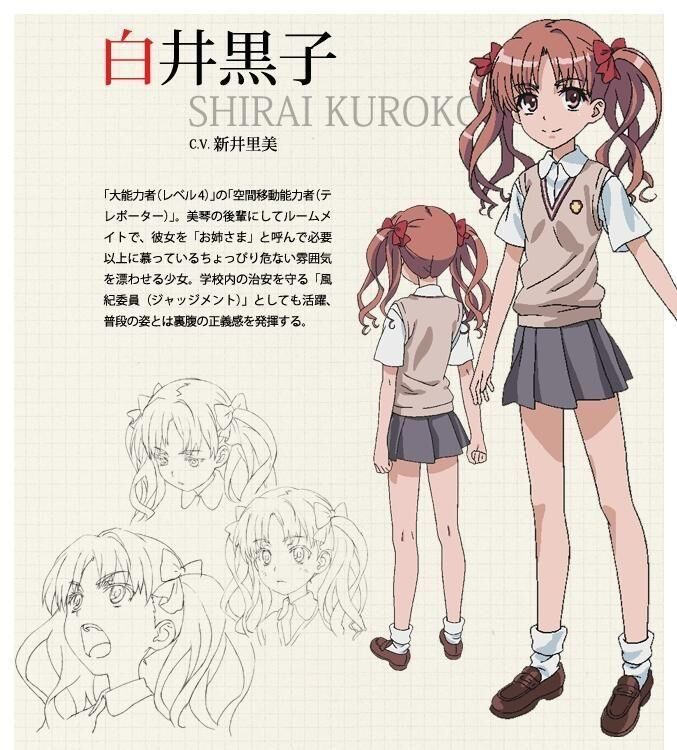
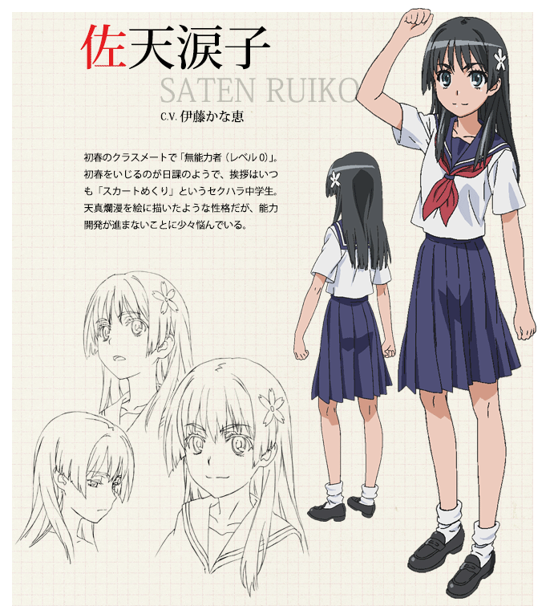
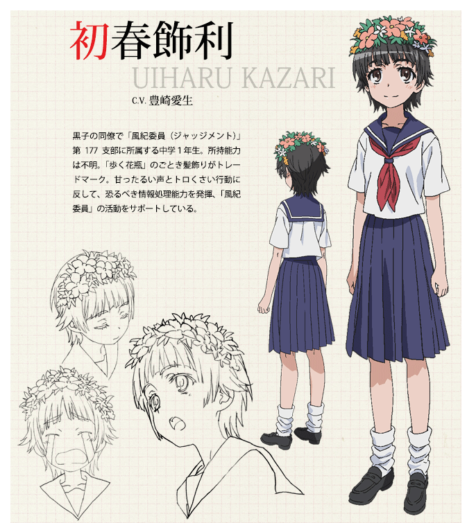
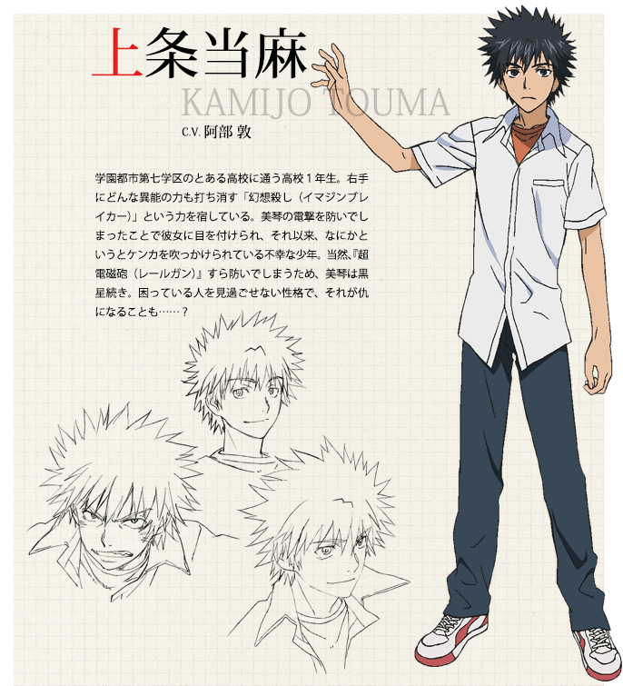
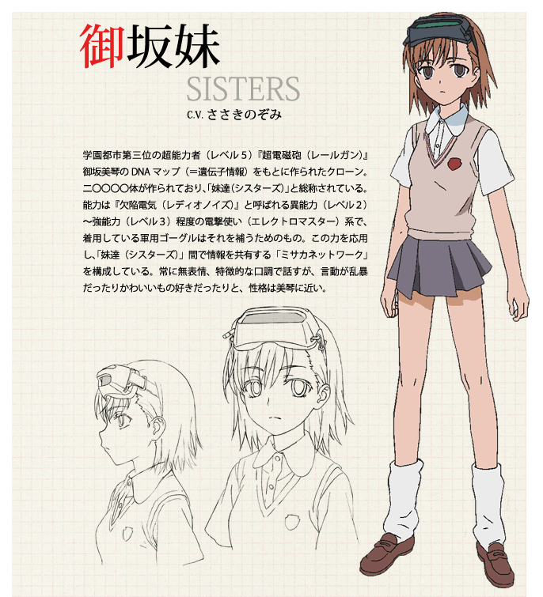

| 音乐——stand still.点击可播放 |
故事发生在面积占据东京都西部的三分之一，居住着230万名人口，其中八成人口是学生的巨大都市“学园都市”。学园都市和外部隔离，研究最尖端科技。所有学生都接受超能力开发，并大都借由药物、催眠术与通电刺激等方式取得超能力。有各种类型不同能力，以范围和威力分为无能力者（level 0）、低能力者（level 1）、异能力者（level 2）、强能力者（level 3）、大能力者（level 4）、超能力者（level 5）和绝对能力者（Level 6）[对能力者暂时无人能达到] ：本作品是《魔法禁书目录》的官方外传，漫画的时间轴与《魔法禁书目录》平行，而动画版的在时间轴上和原作有冲突，时间轴似乎有提前，并非续作。自2007年4月号开始连载的魔法禁书目录漫画外传《科学超电磁炮》，作画为冬川基。作品如标题所言，是以美琴为主角的漫画。
|  | |
|  |  |
|  |  |